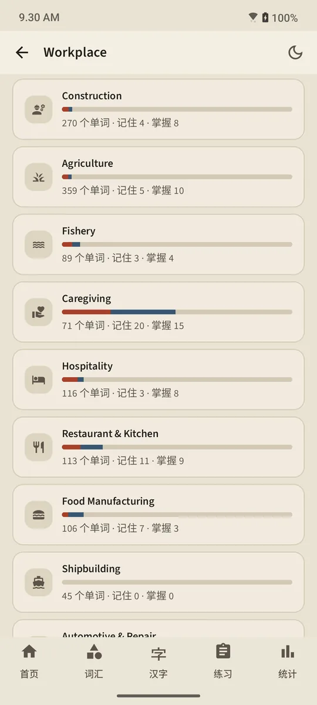
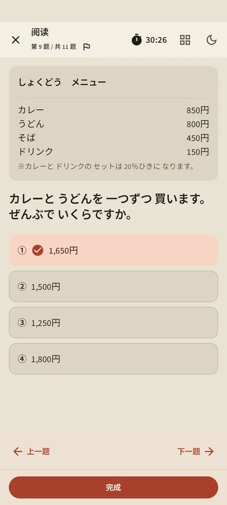
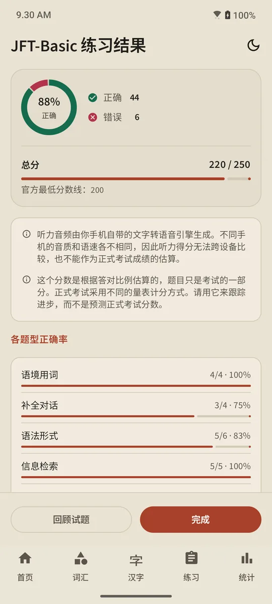

知道你何时会忘记的记忆卡
每张卡片都由现代间隔重复算法 FSRS 安排复习。你只需自评——没记住、不确定或记住了——应用就会算出这个单词何时再出现：几分钟、几天或几周后。间隔时间直接显示在每个按钮上。


TokuGo 是一款日语单词与汉字记忆卡（flashcard）应用，适合准备 JFT-Basic、以特定技能（SSW / Tokutei Ginou）身份赴日工作的人，以及备考 JLPT N5 至 N1 的学习者。
免费开始 · 无需注册账号 · Android 7.0+

每张卡片都由现代间隔重复算法 FSRS 安排复习。你只需自评——没记住、不确定或记住了——应用就会算出这个单词何时再出现：几分钟、几天或几周后。间隔时间直接显示在每个按钮上。
每个单词都经过四个阶段：新、学习中、已记住、已掌握。要达到“已掌握”，必须在 3 个不同的日子里答对测验。已掌握的单词到期后仍会再次测试，答错就会降级。


21 个工作场所主题，包括作业安全、上司指示、合同与工资、工厂、建筑、农业、渔业、护理、酒店、餐厅、食品加工等；另有租房、出入境、银行、医院、购物和交通等生活主题。







分数仅为估算，用于跟踪进步，并非正式考试成绩的预测。
Premium 解锁全部单词和 N3–N1 汉字，去除广告，并可离线学习。免费版开始学习或考试时需要联网。
无需注册账号
开发者没有服务器：你的学习记录保存在手机上，不会发送给开发者。